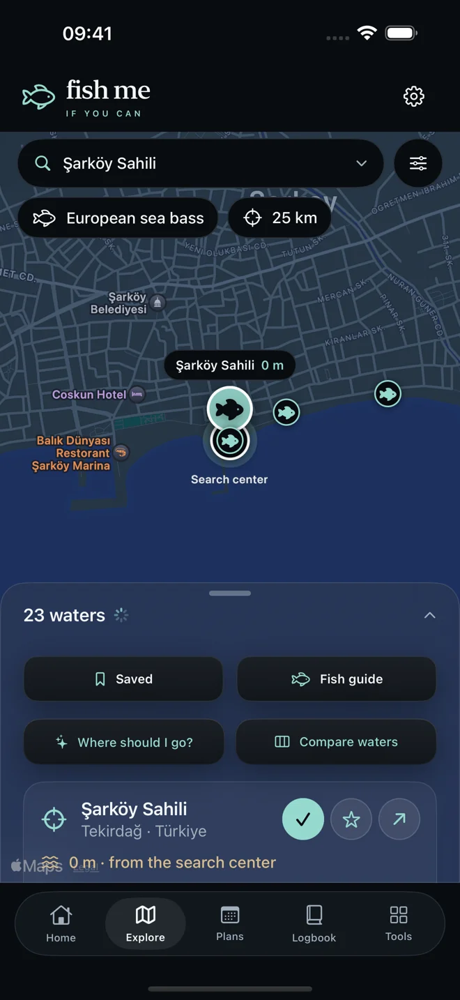
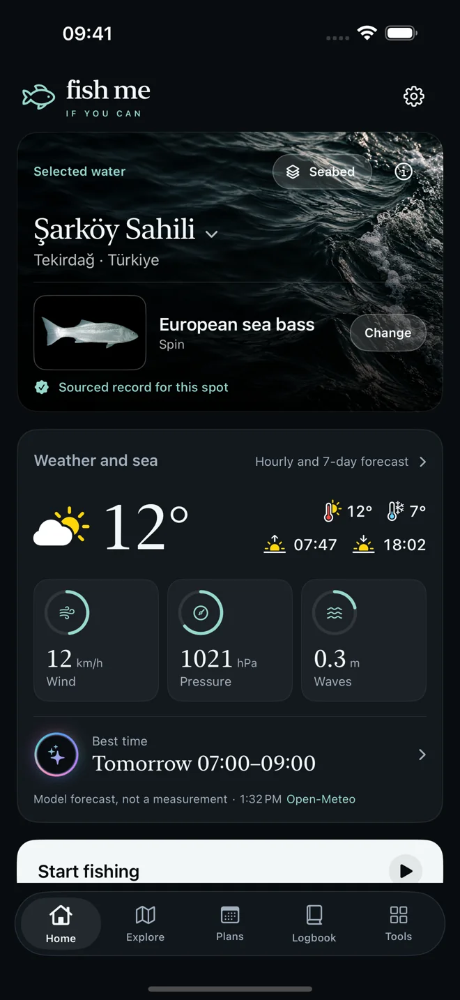
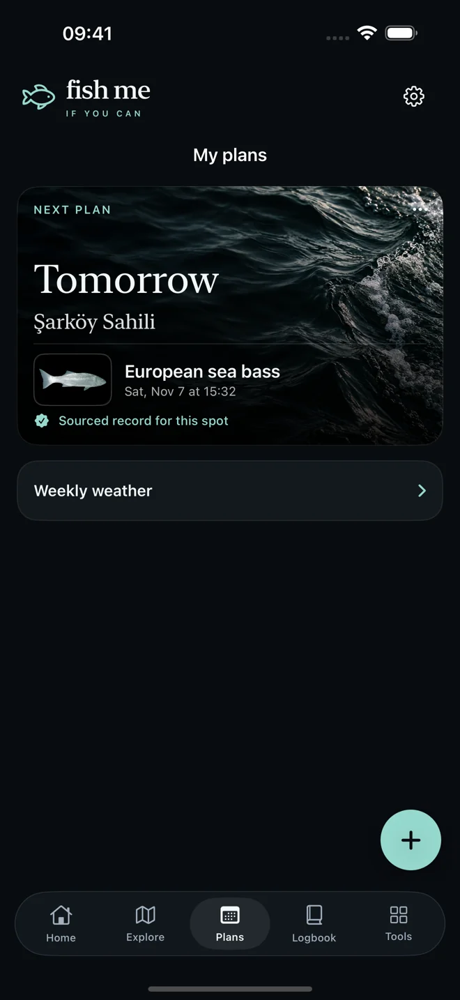
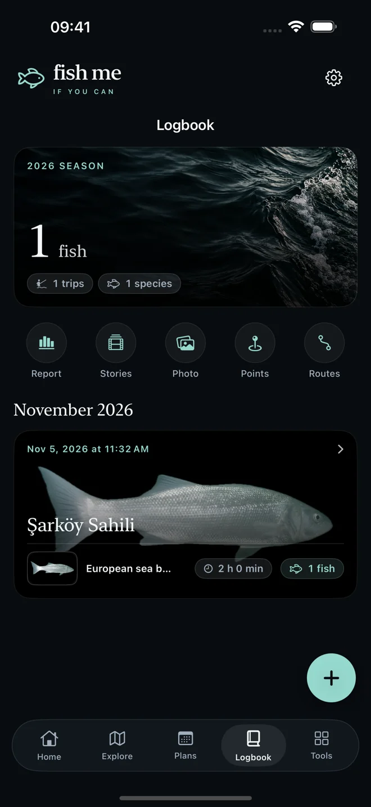
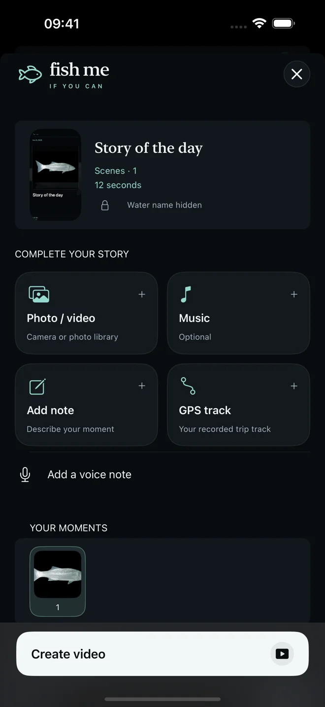

01 / Discover
A place worth exploring.
Explore Turkey and Europe by target species, location and distance. Save the spots you want to return to, with sources and verification status in view.

FISHING, WITH A STORY TO TELL
From your next fishing spot to the story you share. Plan around local conditions, keep your catches and retrace the day — all in one place.
Explore the appComing to iPhone

FISH ME IF YOU CAN / iOSYOUR NEXT TRIP
Find a spot. Check the conditions. Start your trip. Your catches, notes and memories stay together.
Explore Turkey and Europe by target species, location and distance. Save the spots you want to return to, with sources and verification status in view.

Review wind, pressure and hourly weather alongside your fishing plan. Inspect available seabed sources before choosing your spot.

Keep catches together by trip. Add photos and notes, record an optional GPS route, save points and share coordinates.

THE STORY OF YOUR DAY
Bring photos, music, voice and written notes together with your optional GPS route. Turn the day into a video you can share with the people who matter.

Source-labelled spots. Clear coverage. Species evidence and fishing permission are distinct, and unverified places are marked. Seabed coverage varies by location; the app shows available sources instead of inventing a result.
FISH ME PRO
Download free. Eligible new subscribers can try Pro free for 3 days. Then €5.99/month or €39.99/year in the German storefront. Prices vary by country; Apple shows your local price and eligibility before you confirm.
Auto-renewing subscription. Cancel in Apple Account settings. Existing records remain available to view after access expires.
Subscription terms ↗